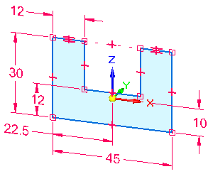
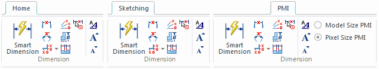
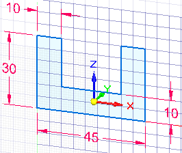

Working with sketch dimensions
Adding dimensions and geometric relationships
You add dimensions and geometric relationships to control the size, shape, and position of the sketch elements. When adding the dimensions and geometric relationships, you can place them relative to the primary axes of the coordinate system. This can be especially useful for symmetric parts during later design modifications.
The 10 mm and 22.5 mm dimensions in this sketch were placed relative to the X and Z axes of the base coordinate system.

You can also define functional relationships using the Variables command.
You can display and hide geometric relationships using the Relationship Handles command.
Dimensioning commands are located in the Dimension group on the Home, Sketching, and PMI tabs. The commands on the PMI tab are available only when adding dimensions directly to 3D geometry.

Keeping dimensions horizontal and vertical to the sketch geometry
To keep dimensions horizontal and vertical to the sketch geometry, you can move the sketch plane origin and reorient the sketch plane X-axis using the Reposition Origin command on the Sketching tab. This makes it possible to draw and dimension on different coplanar faces in the same sketch, yet keep dimension text and relationships oriented to an edge on the face, as shown.

You can use the Zero Origin command to automatically reset the sketch plane origin to the center of the currently locked sketch plane, which is the (0,0,0) coordinate.
To learn how, see the Help topic, Set sketch plane horizontal and vertical orientation for dimensioning.
Using a grid
You can also independently display the sketching grid, alignment lines, and coordinate readouts using the Grid Options command.

For more information, see Working with grids.
Learn more
Locked sketch dimensionsSketch consumption and dimension migration